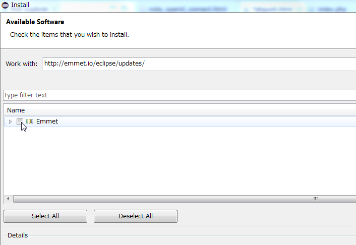
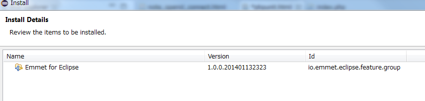
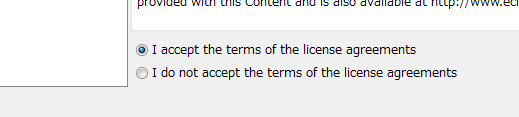
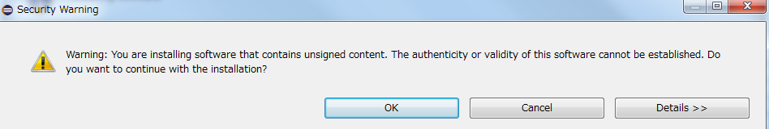
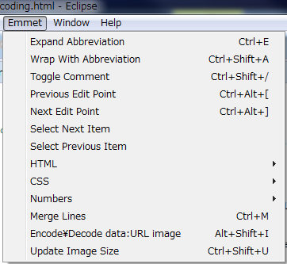
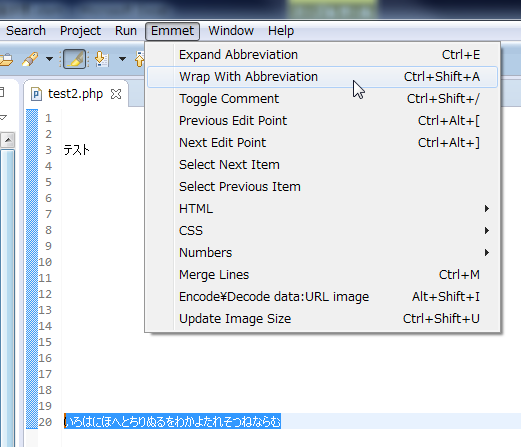
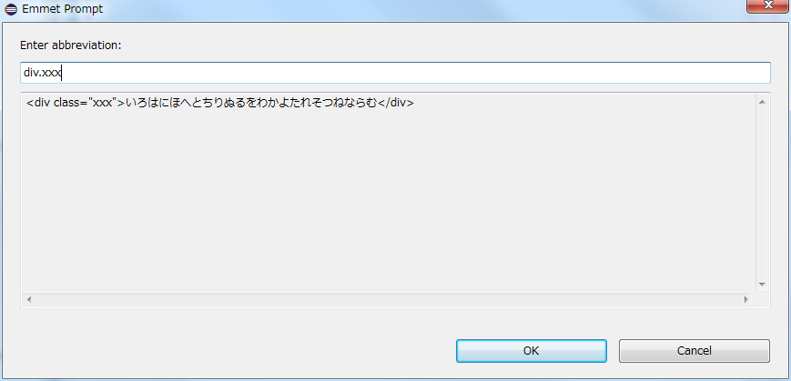
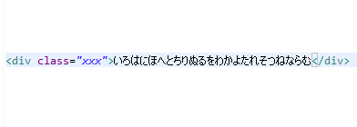
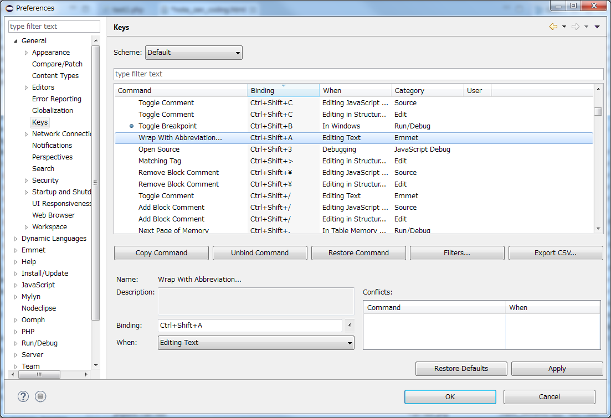
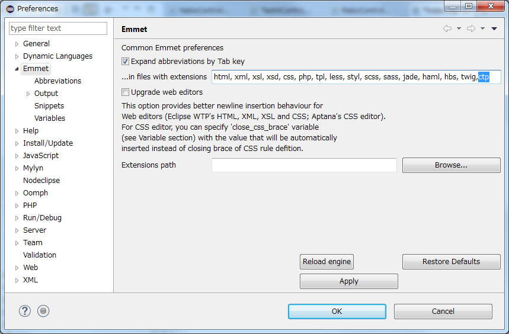

公式サイト Emmet
目次
- Zen Codingの概要
- EclipseにEmmet(Zen Coding)をインストールする手順
- 基本的な使い方
- 選択文字にマークアップを付け加える
- 関連付けるファイルの種類（拡張子）を追加
Zen Codingの概要
Zen Codingはhtmlのマークアップを入力支援するツールである。
短いコード書きTabキーを押すだけでhtmlコードを書きだせる。
Eclipseのプラグインとして使う。
なお現在は、「Emmet」という名称のようである。
使い方
- 適当なhtmlファイルを開く。
-
「ul>li」を入力しTabキーを押す。
ul>li
-
下記のようなul要素の骨組みに変換される。
<ul>
<li></li>
</ul>
htmlファイルだけでなく、xml、phpなどにも対応している。
また、Zen CodingはEclipseだけでなく、Visual Studio,EmEditor,サクラエディタなどいくつかのソフトウェアにも対応している。
参考リンク
GitHub
Google Code | Archive | zen-coding
HTMLを高速コーディング! Zen CodingをEclipseで使ってみる
EclipseにEmmet(Zen Coding)をインストールする手順
- Eclipseを起動
- Help → Install new softwar」と操作し、Install画面を開く。
-
Work Width に「http://emmet.io/eclipse/updates/」を入力してEnterキーを押す。
-
Emmetにチェックを入れ、Nextボタンを押す。


-
規約の同意を選択して、Nextボタンを押す。

-
あとは道なり。途中でアラート等がでるがNextボタンやYesボタンで進める。

-
自動でEclipseが再起動されれば、Eclipseにインストール完了。

公式のインストール手順
基本的な使い方
短縮コードを書いたあとTabキーを押すことにより、htmlコードが作成されます。
短縮コードの書き方にはいくつかの法則がありますので、以下に記載します。
短縮コード：
ul
<ul></ul>
短縮コード：
li>a
「>」で子要素を作成する。
<li><a href=""></a></li>
短縮コード：
div#neko
「#」でid属性を付ける。
<div id="neko"></div>
短縮コード：
div.dog
「.」でclass属性を付ける。
<div class="dog"></div>
短縮コード：
strong+span
「+」で兄弟要素を追加する。
<strong></strong><span></span>
短縮コード：
li*4
「*」で要素を複数作る。
<li></li>
<li></li>
<li></li>
<li></li>
短縮コード：
table>(thead>tr>th*4)+(tbody>tr*3>td*4)
テーブルを作成する
<table>
<thead>
<tr>
<th></th>
<th></th>
<th></th>
<th></th>
</tr>
</thead>
<tbody>
<tr>
<td></td>
<td></td>
<td></td>
<td></td>
</tr>
<tr>
<td></td>
<td></td>
<td></td>
<td></td>
</tr>
<tr>
<td></td>
<td></td>
<td></td>
<td></td>
</tr>
</tbody>
</table>
選択文字にマークアップを付け加える
選択文字にマークアップを付け加えることができます。
手順
- 文字を選択します。
-
メニューから「Emmet → Wrap With Abbreviation」を選択します。

-
マークアップを入力してOKを押します。短縮コードを入力することもできます。
例では短縮コード「「div.xxx」を入力。

-
以上で、選択文字にマークアップが付加されます。

ショートカットを使う
本来なら文字選択してショートカットキー「Ctrl + Shift + A」で、すぐにマークアップ入力が呼び出せます。
しかし、Eclipseのデフォルト設定では「Ctrl + Shift + A」は別機能に割り当てられていて使えません。
ですので、ショートカットキーの割り当て画面で設定する必要があります。
ショートカットキーの割り当て画面は「Window → Preferences → General → Keys」で呼び出せます。
「Ctrl + Shift + A」は Wrap With Abbreviation だけに割り当てるよう設定します。
（重複分はショートカットキーを消すか、別のキーに割り当てる）

関連付けるファイルの種類（拡張子）を追加
Emmetの機能はすべてのファイル（拡張子）で利用できるわけでない。
だが、設定で拡張子を追加し、Emmetに対応させることができる。
ctpファイルをEmmetに対応させる手順
- 「Window → Perferences → Emmet」でEmmetの共通設定画面を開く。
-
関連付けるファイルの拡張子を追加する。
「...in files with extensions」にctpを追記。

- OKボタンを押す。
- 以上でctpファイルでもEmmetの機能が使えるようになる。
XXX
- ホーム
- プログラミングの覚書目次
- Eclipseの覚書目次
- Zen Codingの覚書